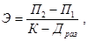

ЦЕНТРАЛЬНЫЙ
НАУЧНО-ИССЛЕДОВАТЕЛЬСКИЙ
И ПРОЕКТНО-ЭКСПЕРИМЕНТАЛЬНЫЙ ИНСТИТУТ
ИНЖЕНЕРНОГО ОБОРУДОВАНИЯ ГОРОДОВ,
ЖИЛЫХ И ОБЩЕСТВЕННЫХ ЗДАНИЙ
ПОСОБИЕ
по проектированию
городских (местных)
телефонных сетей
и сетей проводного вещания
городских и сельских поселений.
Диспетчеризация систем
инженерного оборудования
(к СНиП 2.07.01-89)
Утверждено
приказом ЦНИИЭП инженерного оборудования
Госархитектуры СССР
от 13 июня 1990 г. № 11
Москва
Арендное производственное
предприятие ЦИТП
1992
Рекомендовано к изданию решением Научно-технического Совета ЦНИИЭП инженерного оборудования Госархитектуры СССР.
Содержит вспомогательный материал для проектирования систем электросвязи и диспетчеризации на стадии разработки генеральных планов городских и сельских поселений, способствует комплексному подходу и взаимоувязке инженерных и архитектурно-планировочных вопросов при выборе стратегии перспективного развития сетей связи и систем диспетчеризации инженерного оборудования городских и сельских поселений.
Для проектных организаций, занимающихся разработкой генеральных планов городских и сельских поселений, а также организаций, связанных с реализацией генеральных планов.
Составитель - инж. О.Г. Лоодус.
Наименования организаций и учреждений приведены по состоянию на 1 ноября 1991 г.
При пользовании Пособием следует учитывать утвержденные изменения строительных норм и правил и государственных стандартов.
Настоящее Пособие разработано к СНиП 2.07.01-89 «Градостроительство. Планировка и застройка городских и сельских поселений».
Учитывая, что в практике проектирования инженерного оборудования населенных пунктов имеется большое количество повторяющихся данных в различных системах, в Пособии рассматриваются общие вопросы, встречающиеся в проектах всех или большинства систем, и отдельно специфические для той или иной системы.
Схемы построения и развития электросвязи и диспетчеризации в городах, поселках и сельских населенных пунктах существенно отличаются друг от друга в зависимости от величины населенных пунктов, численности населения, размеров и характеристики селитебной территории, наличия и характеристики промышленных и других производственных предприятий, непроизводственных организаций и учреждений.
Одним из основных отличий в проектировании систем связи и диспетчеризации в зависимости от величины населенных пунктов является максимальное совмещение этих систем в малых населенных пунктах и высокий уровень специализации в больших и крупных городах. Так, например, если для городов разрабатываются схемы развития городских телефонных сетей и отдельно сетей проводного вещания, то для сельских населенных пунктов - схемы развития сельских сетей электросвязи с совмещенными линиями и аппаратурой для сельской телефонной связи, передачи программ звукового вещания, телеграфной связи, передачи данных и диспетчерской связи.
Для управления и контроля за работой систем инженерного оборудования в зависимости от величины населенного пункта, насыщенности его инженерным оборудованием и структуры эксплуатирующих организаций создаются комплексные (объединенные) диспетчерские системы, комплексные или отраслевые автоматизированные диспетчерские системы управления, или автоматизированные системы управления (АСУ).
В Пособии не рассматриваются вопросы проектирования междугородной телефонной связи, а том числе Единой автоматизированной системы связи (ЕАСС СССР), телеграфной связи, системы передачи данных (СПД), радиовещания и других специальных систем, составляющих инфраструктуру связи и технических средств информации городов, поселков и сельских населенных пунктов.
Опыт разработки раздела «Диспетчеризация систем инженерного оборудования» генплана города весьма небольшой, а нормативные документы по проектированию диспетчеризации и систем управления инженерными сетями и сооружениями в общегородских масштабах отсутствуют. Раздел «Диспетчеризация» настоящего Пособия составлен на основании незначительной практики проектирования в ЦНИИЭП инженерного оборудования с привлечением опыта специализированных институтов, разрабатывающих отраслевые системы диспетчеризации, обеспечивающих АСУ электроснабжением, водоснабжением, тепловыми сетями и т.п.
Вопросы проектирования раздельных по отраслям систем диспетчеризации и АСУ в Пособии не рассматриваются, поскольку они обычно учитываются в нормативных и справочных материалах отраслевого характера.
При проектировании схем электросвязи, проводного вещания, сигнализации и диспетчеризации населенных пунктов, кроме СНиП 2.07.01-89 и настоящего Пособия, необходимо руководствоваться законами СССР, указами Президиума Верховного Совета СССР и другими директивными и нормативными документами по капитальному строительству.
При подготовке Пособия использованы материалы институтов: Гипросвязи-1, Гипросвязи-2 и Гипросвязи-3 Минсвязи СССР, ВНИИПО МВД СССР, Ленинградского НИИ АКХ им. К.Д. Памфилова Минжилкомхоза РСФСР и других организаций.
1.1. Основанием для разработки схемы построения (развития) городской (местной) телефонной сети (ГТС) являются договор (госзаказ) на выполнение проектных работ и план работ института-разработчика.
1.2. Схема развития городской телефонной сети должна входить в состав генплана города как раздел. Схема может быть разработана как самостоятельный проект на основе действующего или перспективного генерального плана.
1.3. Схему, как правило, разрабатывает специализированная проектная организация Министерства связи СССР в увязке со схемой развития сетей связи в регионе и с Единой автоматизированной системой связи СССР. При этом в пояснительной записке должно быть указано, как именно схема развития телефонной сети города согласована с ЕАСС СССР.
1.4. Схема развития разрабатывается на период, указанный в генплане. В отдельных случаях заказчиком может быть установлен иной период. Обычно его следует принимать не менее 15 лет.
Период принято делить на три этапа, как правило, совпадающие с этапами народнохозяйственных планов:
I этап - может составлять часть пятилетки или несколько превышать ее. При разработке схемы в первые два года пятилетки за I этап принимается период от начала разработки до конца текущей пятилетки; в 3 - 5-е годы текущей пятилетки - от начала разработки до конца пятилетки, следующей за текущей.
В этом случае на I этапе выделяется 1-я очередь строительства, отражающая показатели развития ГТС на конец текущей пятилетки;
II этап - последующая пятилетка после I этапа;
III этап - перспектива (расчетный срок генплана развития города). Период может быть разбит и на два этапа, если такая разбивка принята в генплане или указана в задании на разработку схемы:
I этап - расчетный срок;
II этап - перспектива с выделением первоочередных работ.
1.5. Состав, содержание и объем материалов, входящих в схему развития телефонной сети, порядок их разработки и оформления определены в СНиП 2.07.01-89, Инструкции ВСН 38-82 и эталоном.
Схема развития телефонной сети состоит из двух частей:
I (закрытая) включает общую пояснительную записку, схемы районирования и узлообразования, таблицы расчета количества телефонных аппаратов по этапам развития;
II (для служебного пользования) содержит необходимый табличный и графический материалы, ситуационную схему районирования сети по этапам, а также материалы, определяющие размеры капиталовложений и материальных ресурсов, таблицы расчета межстанционных соединительных линий на I, III этапы, материалы по организации эксплуатации.
1.6. В схеме развития ГТС должны быть рассмотрены основные вопросы на всех этапах развития сети:
потребность города в абонентских устройствах;
размещение и емкость телефонных станций, границы телефонных районов;
принципы построения сети;
количество, емкость, границы узловых районов и места размещения узлового оборудования;
нумерация станций и узлов, очередность строительства и расширения станций, открытия узловых станций;
организация межстанционной связи;
организация связи с сельско-пригородным районом и междугородной связи;
рекомендации по эксплуатации;
капитальные вложения, необходимые материальные ресурсы и технико-экономические показатели сети на I, III этапы развития.
1.7. Итоговые основные данные по разделу «Городские телефонные сети» представлены в таблице.
|
Количество |
|||
|
Существующее положение |
1-я очередь |
Расчетный срок |
|
|
Общая численность населения, тыс. чел. |
|||
|
Телефонная численность на 1000 жителей с учетом основных телефонных аппаратов Минсвязи СССР и других ведомств (без таксофонов), телефонов |
|||
|
Количество телефонных аппаратов с учетом аппаратов учрежденческих и производственных телефонных станций (УПТС) других ведомств, имеющих выход на сеть общего пользования, телефонов |
|||
|
В том числе: |
|||
|
Минсвязи СССР |
|||
|
других ведомств |
|||
|
Процент телефонов квартирного сектора |
|||
|
Общая монтированная емкость ГТС, тыс. номеров |
|||
|
Вводимая емкость ГТС, тыс. номеров, всего |
|||
|
В том числе: |
|||
|
прирост |
|||
|
замена |
|||
2.1. Основанием для проектирования схемы развития городской телефонной сети служит задание на ее разработку, являющееся приложением к договору на выполнение проектных работ.
2.2. В качестве исходных данных для разработки схемы должны быть использованы:
1. Основной чертеж генерального или опорного плана города в масштабах 1:10000, 1:20000, 1:25000 или в других имеющихся масштабах. На чертеж наносятся границы административных районов, планировочных зон, данные о размещении жилой застройки с выделением 1-й очереди строительства, промышленных территорий.
2. Выписки из пояснительной записки к генеральному плану города:
краткая характеристика, его экономическое и культурное значения, наличие естественных преград, климатические условия, характер грунтов, характер застройки, транспортные и инженерные сети;
численность населения на проектные этапы и его расселение по планировочным зонам, микрорайонам;
динамика трудовой структуры населения по этапам развития (тыс. чел. и процент общей численности): градообразующая и обслуживающая группы, несамодеятельное население;
численность работающих по градообразующим кадрам в промышленности, строительстве, на внешнем транспорте, в науке, здравоохранении, кадров внегородского значения, учебных заведений и т.п. по этапам развития;
перечень крупных научно-исследовательских и проектных организаций с указанием их размещения по планировочным зонам, микрорайонам и данных о численности работающих в них по этапам развития;
перечень крупных промышленных предприятий с указанием их размещения по планировочным зонам, микрорайонам и данных о численности работающих в них по этапам развития.
2.3. На момент разработки схемы от городской телефонной сети должны быть получены сведения:
данные о распределении существующих квартирных и учрежденческих телефонов по шкафным районам и зонам прямого питания (прил. 1);
данные о существующих сооружениях ГТС (прил. 2);
нумерация станций и подстанций;
данные об УПТС;
данные о существующей междугородной связи;
данные об АТС пригородных пунктов, административно подчиненных горсовету;
годовой объем продукции по принятой номенклатуре показателей;
исходные данные для раздела «Организация строительства».
2.4. На объекте необходимо обследовать существующие станции, выявить наличие свободных площадей для расширения АТС и МТС.
2.5. Принятые предварительные проектные решения следует согласовывать с Управлением городской телефонной сети, производственно-техническим управлением связи и исполкомом городского Совета народных депутатов и оформлять протоколом.
3.1. При разработке схемы следует рассчитывать только основные телефонные аппараты, формирующие емкость телефонных районов (см. таблицу).
3.2. Расчет количества телефонных аппаратов ведется на всех этапах развития в зависимости от имеющихся исходных данных либо по раздельным нормам для квартирного и народнохозяйственного секторов каждой градообразующей группы, либо по усредненным нормам.
3.3. Количество телефонов-автоматов соединительных линий с УПТС и прямых проводов на всех этапах развития необходимо принимать по действующим ведомственным нормам технологического проектирования.
3.4. Количество телефонных аппаратов УПТС с правом выхода на общегосударственную телефонную сеть учитывается на всех этапах в количестве телефонных аппаратов народнохозяйственного сектора и входит в норму телефонной плотности.
3.5. Расчет количества телефонных аппаратов на всех этапах следует производить на основании утвержденных норм телефонной плотности.
3.6. При пользовании нормами телефонной плотности необходимо анализировать уровень развития рассматриваемой сети в соотношении с последующими этапами развития.
3.7. Основной задачей III этапа (расчетного срока) является определение емкости ГТС при норме телефонного насыщения, которая должна быть достигнута после 2000 года.
3.8. Норму телефонного насыщения необходимо рассчитывать для каждого города индивидуально.
3.9. В основу расчета нормы телефонного насыщения должно быть положено:
для квартирного сектора - телефонный аппарат на каждую семью. Количество аппаратов определяется с учетом коэффициента семейности в городе;
для народнохозяйственного сектора исходя из анализа структуры самодеятельного населения и дифференцированных норм на перспективу для различных его групп - количество телефонных аппаратов на 1000 работающих согласно общесоюзным нормам.
4.1. При районировании сети в схеме должны быть определены границы станций конечной емкости и очередность открытия или расширения их по этапам развития.
Очередность строительства станций выявляют исходя из распределения телефонной плотности, характера существующей застройки, размещения и объемов строительства в соответствии с данными генплана или с планами городского отдела по делам строительства и архитектуры.
4.2. Определение границ станций предельных емкостей должно базироваться на выполненном распределении абонентских устройств по микрорайонам города на перспективу, по оптимальной емкости станций, при максимальном использовании существующих сооружений и перспективной планировке города.
4.3. При большой территориальной телефонной плотности предельные емкости станций рекомендуется принимать более 10 тыс. номеров, а в отдельных случаях 30 тыс. номеров и более.
При этом в целях лучшего использования индексов и помещений в типовых зданиях желательно выбирать емкости станций кратные 10 тыс. номерам.
Для обособленных территорий, отстоящих на значительном расстоянии от соседних станций, допускается предусматривать станции емкостью менее 10 тыс. номеров.
4.4. Границы станций на I этапе расширены и охватывают собственную территорию (постоянная зона обслуживания) и часть территории станций, открываемых в последующие этапы (временная зона обслуживания).
5.1. АТС необходимо размещать, как правило, в центре телефонной нагрузки (ЦТН) с перспективой.
5.2. Размещение станций, открываемых на I этапе, допускается с отклонением от перспективного центра (с соответствующим обоснованием), когда ЦТН, определенные для них на I этапе, отстоят на незначительном расстоянии от ЦТН, определенных на перспективу.
5.3. При размещении АТС необходимо учитывать максимальное использование существующих линейных сооружений и возможность удобного подхода к телефонной канализации.
5.4. Наиболее экономичной формой территории района является форма, близкая к квадрату. При равномерной телефонной плотности станцию размещают в геометрическом центре телефонного района, а при неравномерной - вносят поправки в схему территориальной плотности и этажности застройки.
6.1. На городских телефонных сетях имеются три разновидности районированных сетей: без узлообразования, когда связь между районными АТС осуществляется по принципу «каждая с каждой», с узлами входящего сообщения (УВС) и узлами входящего и исходящего сообщения (УИС).
6.2. Тип коммутационного оборудования во многом определяет систему построения сети.
На сетях с АТС декадно-шаговой системы:
при емкости сети: более 80 тыс. номеров (практически более 50 - 60 тыс. номеров) необходим переход на узлообразование с УВС и шестизначную нумерацию; более 800 тыс. номеров (практически 400 - 500 тыс. номеров) на узлообразование с УВС и УИС и семизначную нумерацию;
связь районной АТС (РАТС) в пределах узлового района осуществляется по принципу «каждая с каждой».
6.3. Связь между РАТС разных узловых районов осуществляется в первом случае по принципу «РАТС - УВС» другого узлового района - «РАТС»; во втором - по схеме «РАТС - УИС - УВС - РАТС». Появление АТС координатной системы несколько расширило возможности построения ГТС.
6.4. Основным направлением оптимизации построения ГТС является разработка нескольких вариантов схем, в которых должны быть учтены:
децентрализация оборудования УВС, позволяющая сократить длину кабелей от РАТС до УВС в тех случаях, когда силовые линии (СЛ) входят в узловой район из нескольких направлений. В некоторых случаях производится вынужденная децентрализация оборудования УВС из-за отсутствия свободных площадей на станциях;
определение оптимальной емкости узлового района (100 или 200 тыс. номеров);
построение внутриузловой связи - соединение РАТС одного узла по принципу «каждая с каждой» или через УВС своего узлового района;
выбор типа оборудования для строительства узла (декадно-шаговой, координатной систем или смешанного оборудования), связанный с использованием на ГТС различного типа оборудования РАТС (декадно-шаговой и координатной систем) и др.
6.5. Из всех возможных вариантов выбирают вариант с наименьшими капитальными затратами и эксплуатационными расходами на линейные и станционные сооружения.
Стоимость определяется объемом коммутационного оборудования, типом соединительных линий (СЛ), длиной СЛ внутриузловой и межузловой связи, использованием существующих сооружений, типом коммутационного оборудования, структурным составом абонентов, величиной телефонной плотности, емкостью станций и всей сети в целом, числом направлений связи, количеством и соотношением низко- и высокочастотных параметров телефонного сообщения и т.д. Поэтому в каждом конкретном случае следует сравнивать варианты по стоимости и выбирать оптимальный.
6.6. Для упрощения расчетов каждой сети можно вывести свои средние величины для СЛ внутриузловой связи, межузловой связи, стоимости единицы кабеля и станционного оборудования.
6.7. Построение ГТС с применением квазиэлектронных и электронных АТС имеет преимущества по сравнению со станциями электромеханических систем:
большая емкость станций;
возможность организации практически необходимого числа направлений;
возможность анализа любого числа кодов и любой значности;
получение полнодоступных пучков линий;
возможность использования общего канала сигнализации (ОКС);
возможность предоставления дополнительных услуг абонентам.
Это позволяет строить узловые районы большой емкости (до 200 тыс. номеров) - АТСКЭ «Кварц», АТСЭ «ДХ-200».
6.8. В АТСКЭ «Кварц» можно организовать до 30 исходящих направлений связи, а в АТСЭ «ДХ-200» - 128, в АТСЭ «МТ-20» - 2048, что позволяет организовывать узловой район практически любой требуемой емкости.
7.1. Количество соединительных линий должно определяться на I этап и на перспективу для направлений местной и междугородной связи, связи со спецслужбами и узла сельско-пригородной связи (УСП).
Расчет и распределение возникающих сообщений следует производить согласно рекомендациям ВНТП 112 -79.
7.2. Количество соединительных линий на I этапе определяется по действующим инструкциям для каждого типа оборудования. Расчет соединительных линий на перспективу рекомендуется производить исходя из использования одной соединительной линии, эрл:
0,8
- ЭАТС - ЭАТС;
0,6 - 0,7 - ЭАТС - АТСК, АТШС.
7.3. Расчетное количество соединительных линий на I этап и на перспективу приводится на схемах построения межстанционной сети по узловым районам.
8.1. В зависимости от системы эксплуатации МТС связь абонентов ГТС с МТС осуществляется по заказным, заказно-соединительным и соединительным линиям.
8.2. Отдельные сельские АТС в небольшом количестве могут быть включены в ближайшие районные АТС города на правах учрежденческих телефонных станций.
8.3. При достаточно большом количестве сельских АТС или в случае размещения на территории города партийных, советских и хозяйственных организаций, обслуживающих сельский район, целесообразно включать сельские АТС в узел сельско-пригородной связи (УСП), позволяющий соединять абоненты ГТС с сельскими абонентами, а также и последние между собой.
8.4. Пригородный узел организуется в тех случаях, когда пригородные пункты административно подчинены городу.
Включение пригородных телефонных сетей в сеть города может осуществляться по принципу учрежденческих телефонных сетей в районные АТС либо через пригородный узел.
Выбор способа включения определяется с учетом конкретных местных условий (расстояние, тяготение и другие факторы).
9.1. При разработке схемы развития телефонной сети городов капитальные вложения определяют укрупненно по ГТС в целом на I, III этапы исходя из утвержденных нормативов удельных капитальных вложений.
9.2. При этом следует учитывать соответствие условий конкретных объектов строительства условиям, принятым в нормативах (см. общую часть).
9.3. Рассчитывать капитальные вложения следует отдельно по линейным и станционным сооружениям абонентской и межстанционной сетей и гражданским сооружениям в зависимости от принципа построения сети, в соответствии с емкостью и системой оборудования станций, типом зданий.
9.4. При определении капитальных вложений в систему промежуточного усиления частоты при отсутствии конкретных проектных данных допускается принимать стоимость одного номера - 25 руб., в том числе строительно-монтажные работы - 1,5 руб.
Результаты расчета капитальных вложений по этапам развития приведены в прил. 4 и 5.
9.5. Показатель экономической эффективности капитальных вложений Э в развитие ГТС на I и III этапы развития определяется по формуле

где П1 - годовая прибыль ГТС в год, предшествующий соответствующему этапу развития;
П2 - годовая прибыль ГТС в последнем году этапа;
К - капитальные вложения за соответствующий этап развития;
Драз - разовые доходы, получаемые ГТС за установку телефонных аппаратов за этап.
9.6. Капитальные вложения экономически эффективны, если показатель экономической эффективности не ниже нормативного, принятого по отрасли «Связь».
9.7. Годовой объем прибыли определяют как разность между годовой суммой тарифных доходов ГТС по основной деятельности и суммой годовых эксплуатационных расходов.
9.8. Расчет годовой суммы тарифных доходов Дгод производится в соответствии с Прейскурантом № 125 «Тарифы на услуги связи» и структурой услуг ГТС, предусматриваемых на этапе схемы развития, кроме доходов от новой установки телефонных аппаратов. При расчете доходов на ближайшую перспективу (I этап) допускается использовать удельные значения, полученные в процессе изысканий, при внедрении оборудования тех же систем, которые применялись на ГТС при разработке схемы развития.
9.9. Внедрение квазиэлектронных и электронных станций обеспечит абонентам дополнительные виды обслуживания (ДВО). Предварительная оценка прироста тарифных доходов от ДВО для станций типа ИАТСКЭ «Исток» - 45 руб./номер в год, для станций типа «ДХ-200» и «МТ-20/25» - 20 руб./номер в год (с учетом объема возможного использования ДВО и предложений по тарифам на них).
9.10. Разовые доходы от установки телефонных аппаратов рассчитывают в соответствии с дополнительным Прейскурантом № 125-1980/2. В расчетах рекомендуется принимать удельные разовые доходы в размере 92 руб./номер.
9.11. При расчете тарифных доходов можно пользоваться указаниями по расчету срока возврата сумм, кредитуемых Госбанком СССР на строительство АТС.
9.12. Годовые эксплуатационные расходы рассчитывают по элементам затрат:
заработная плата штата основной деятельности и отчисления на социальное страхование; амортизационные отчисления; материалы и запасные части; электроэнергия со стороны;
прочие производственные и транспортные расходы; прочие управленческие и эксплуатационно-хозяйственные расходы.
9.13. Расчет годовых эксплуатационных расходов производится в соответствии с Руководством по проектированию «Определение экономической эффективности капитальных вложений по сооружениям проводной связи и радиотрансляционных узлов». (М., Гипросвязь, 1979).
Допускается также использовать разрабатываемые Гипросвязью-2 нормативы удельных эксплуатационных расходов по ГТС.
9.14. Для разработки схемы развития ГТС для сети в целом на конец I и III этапов необходимо определить:
экономические показатели (прил. 5);
капитальные вложения в вводимую мощность (прил. 4);
стоимость основных производственных фондов. Стоимость основных производственных фондов (и нормируемых оборотных средств) действующей ГТС определяют по данным Производственно-технического управления связи или Министерства связи союзной республики в процессе изысканий, фондов, вводимых на этапах развития ГТС, - условно приравнивают к объему капитальных вложений за тот же период;
тарифные доходы;
объемы продукции. Годовой объем продукции следует рассчитывать в соответствии с объемом проектируемых сооружений и ценами на продукцию предприятий связи по действующей Номенклатуре показателей и ценам на продукцию предприятий связи с указаниями по их применению (изд. 1980 г.) с учетом территориальных коэффициентов или укрупненно по Номенклатуре и ценам на продукцию подотраслей связи;
численность производственного штата;
годовые эксплуатационные расходы;
фондоотдачу - годовой объем продукции в денежном выражении: на 1 рубль среднегодовой стоимости основных производственных фондов;
производительность труда - отношение годового объема продукции в денежном выражении к численности производственного персонала;
общую рентабельность - отношение годовой прибыли (по объему продукции) к среднегодовой стоимости всех производственных фондов (основных фондов и нормируемых оборотных средств).
Основные положения схемы сети проводного вещания аналогичны городским (местным) телефонным сетям (см. разд. I, пп. 1.1 - 1.5 настоящего Пособия).
2.1. Построение сетей проводного вещания осуществляют в зависимости от численности населения, размеров, конфигурации и взаимного расположения населенных пунктов, коэффициента семейности и спроса на радиотрансляционные точки, размеров границ городов, сельских районов, совхозов и колхозов, возможности применения тех или иных типов линий и других местных условий.
2.2. В сельской местности, поселках, мелких и средних городах при нагрузке примерно до 50 тыс. радиотрансляционных точек строят централизованные сети, т.е. сети с одной станцией проводного вещания.
2.3. Централизованные сети строят, как правило, двухзвенными с распределительными фидерными и абонентскими линиями. Для подключения отдаленных и больших нагрузок применяют также магистральные фидерные линии.
2.4. Магистральные фидерные линии заканчиваются фидерными трансформаторами или трансформаторными подстанциями однолучевого питания. Небольшие нагрузки по трассе магистральной фидерной линии можно подключать непосредственно к этой линии с помощью высоковольтных абонентских трансформаторов.
2.5. Станции централизованных сетей осуществляют прием сигналов программ вещания и передачу их на линии, имеющие необходимые мощность и напряжение в спектре звуковых частот (на сетях однопрограммного вещания), а также в спектре высоких частот (на сетях многопрограммного вещания).
2.6. Станции, расположенные на территории сельского района, за исключением районного центра, строят дистанционно управляемыми (без дежурного персонала). Они принимают сигналы управления и передают сигналы о своем состоянии. Контроль за работой этих станций осуществляется на станции проводного вещания районного центра.
2.7. Прием программ вещания, кроме районного вещания, и сигналов управления осуществляется на станциях, как правило, на радиовещательные приемники, а программ районного вещания и сигналов резервного управления - по коммутируемым каналам промежуточной частоты сельской телефонной связи, временно их занимая.
2.8. Для обеспечения трансляции программ районного, совхозного и колхозного вещания централизованные сети строятся с учетом границ сельских районов и границ совхозов и колхозов.
2.9. В больших, крупных и крупнейших городах при нагрузке примерно более 50 тыс. радиотрансляционных точек строят децентрализованные сети, т.е. сети с несколькими или множеством станций проводного вешания.
2.10. Децентрализованные сети строят, как правило, трехзвенными с магистральными и распределительными фидерными и абонентскими линиями. В случаях невозможности или экономической нецелесообразности строительства магистральных фидерных линий на отдельных участках территории города применяют децентрализованные сети.
2.11. Магистральные фидерные линии децентрализованных сетей заканчиваются трансформаторными подстанциями. Для бесперебойной трансляции программ вешания к каждой трансформаторной подстанции подводят две магистральные фидерные линии от разных опорных усилительных станций, одна из которых является рабочей и вторая - резервной. При невозможности или экономической нецелесообразности строительства отдельных резервных магистральных фидерных линий вместо трансформаторных подстанций применяют блок-станции, состоящие из оборудования трансформаторной подстанции и усилителя, используемого для резервного питания этого оборудования. Для подключения отдельных отдаленных нагрузок применяют трансформаторные подстанции однолучевого питания, к которым питание подводится по одной магистральной фидерной линии.
2.12. Станции децентрализованной сети, кроме центральной станции, строят дистанционно управляемыми. Подача программ, управление и контроль за их работой осуществляются с центральной станции по линиям городской телефонной сети.
2.13. Станции децентрализованных сетей проводного вещания обеспечивают:
центральная станция (ЦСПВ) - прием и передачу на другие станции сети программ вещания, управление ими и контроль за работой сети;
опорная усилительная станция (ОУС) - прием сигналов программ вещания и передачу их с необходимыми мощностью и напряжением на магистральные фидерные линии в спектре звуковых частот (основной программы) и в спектре высоких частот (двух дополнительных программ вещания);
усилительная станция (УС) - прием сигналов программ вещания и передачу их с необходимыми мощностью и напряжением на распределительные фидерные линии в спектре звуковых частот (основной программы) и в спектре высоких частот (двух дополнительных программ вещания);
трансформаторная подстанция (ТП) - понижение напряжения сигналов программ вещания, поступающих по магистральным фидерным линиям, и передачу их на распределительные фидерные линии;
блок-станция (БС) - понижение напряжения сигналов программ вещания, поступающих по магистральной фидерной линии и передачу их на распределительные фидерные линии, а также прием сигналов первой (основной) программы и передачу их с необходимыми мощностью и напряжением на распределительные фидерные линии при повреждении магистральной фидерной линии или опорной усилительной станции, к которой она подключена.
3.1. Нагрузку на сети проводного вещания создают абонентские громкоговорители, устанавливаемые в квартирах и индивидуальных жилых домах, в учреждениях, организациях, на предприятиях, в гостиницах и больницах, а также громкоговорители уличной звукофикации.
Нагрузка определяется количеством радиотрансляционных точек независимо от количества установленных в квартире или индивидуальном жилом доме розеток и количеством абонентских громкоговорителей, независимо от типов абонентских громкоговорителей, положения их регуляторов громкости и от программы, на которую они переключаются.
Нагрузка, создаваемая уличными громкоговорителями, пересчитывается на радиотрансляционные точки из расчета 67 радиотрансляционных точек на каждые 10 В·А мощности уличных громкоговорителей.
3.2. Основной нагрузкой сети являются радиотрансляционные точки индивидуального пользования, оборудуемые в квартирах и индивидуальных жилых домах. Поэтому исчисление и оценка количества радиотрансляционных точек производятся по отношению к количеству семей, а не жителей, учитывая, что коэффициент семейности (состав семей) в городах и в сельской местности, в различных регионах страны различен.
3.3. Количество радиотрансляционных точек по отношению к количеству семей в разных радиофицированных населенных пунктах различно, то есть спрос на них неодинаков. Поэтому ожидаемое в населенном пункте на какой-то период количество радиотрансляционных точек необходимо прогнозировать.
Прогноз следует производить на основании анализа изменения за последние годы в данном населенном пункте количества радиотрансляционных точек по отношению к количеству его семей, то есть выявлением тенденции изменения (или сохранения) спроса на радиотрансляционные точки.
В сельских населенных пунктах, кроме районного центра и городов, расположенных на территории района, абсолютное количество семей и радиотрансляционных точек невелико, что не позволяет выявить тенденцию изменения спроса на радиотрансляционные точки по каждому населенному пункту. Поэтому ее следует определять проводными средствами в целом по всем радиофицированным населенным пунктам района, кроме районного центра и городов, расположенных на территории района. Затем на прогнозируемый срок по каждому населенному пункту можно определить ожидаемое количество радиотрансляционных точек, в том числе и по населенным пунктам, нерадиофицированным проводными средствами.
3.4. Необходимость применения громкоговорителей уличной звукофикации, их количество, мощность и места установки определяют заданием на проектирование или согласованием с местным предприятием связи, эксплуатирующим сети проводного вещания.
4.1. Схемы развития сетей проводного вещания разрабатывают в увязке с развитием городов и других населенных пунктов, а также применительно к сельским населенным пунктам в объеме территории сельского административного района или к каждому городу с населением 50 тыс. чел. на расчетный срок его развития.
4.2. Схемы развития сетей проводного вешания в сельской местности разрабатывают на основе решений, принимаемых в проектах районной планировки, и в увязке с намечаемыми сроками их реализации.
4.3. В схеме необходимо определять:
оптимальное построение сетей на расчетный срок и 1-ю очередь строительства с учетом планируемых изменений в районе, ожидаемого количества радиотрансляционных точек, имеющихся сетей проводного вещания и обеспечения возможности трансляции программ совхозного и колхозного вешания по сетям населенных пунктов соответствующих совхозов и колхозов;
в каких населенных пунктах они должны быть созданы и в каких отсутствовать;
какие станции и линии между населенными пунктами необходимо реконструировать или строить вновь.
4.4. В схему развития сетей проводного вещания включают следующие основные материалы:
1. Пояснительную записку, в которой приводят:
ссылку на документы, на основании которых разрабатывалась схема с указанием, кем и когда они утверждены или подписаны;
краткую характеристику района и намечаемые изменения в вопросах построения сетей проводного вешания и применения их основных технических средств;
анализ существующего построения сетей с точки зрения задач, решаемых в схеме;
исходные данные и результаты прогнозирования количества радиотрансляционных точек в целом по району;
обоснование и необходимые пояснения предлагаемого построения сетей на расчетный срок и на 1-ю очередь строительства.
2. Список населенных пунктов района с указанием количества семей и радиотрансляционных точек существующих и ожидаемых на расчетный срок и 1-ю очередь строительства.
3. Таблицу объемов основных работ по строительству, включая новое строительство, расширение, реконструкцию и техническое перевооружение сетей до расчетного срока и на 1-ю очередь строительства.
4. Чертежи построения существующих сетей на расчетный срок и 1-ю очередь строительства.
Расчеты, выполняемые в процессе разработки схемы (ожидаемого количества радиотрансляционных точек, электрических линий и др.), в материалы схемы не включают, их брошюруют в отдельную книгу или в конец книги архивного экземпляра схемы с соответствующей отдельной описью.
4.5. Чертежи построения сетей составляют на соответствующих планах района в масштабе 1:10000, 1:25000, 1:50000 с условными обозначениями:
границы совхозов и колхозов и их центральные усадьбы (если на плане района они не отмечены);
станции проводного вещания с указанием их мощности;
линии проводного вещания между населенными пунктами с указанием их длины, типа проводов или кабелей и диаметра жил. При этом трассы линий, намечаемых к строительству, выбирают с учетом местных условий и показывают без привязки к ориентирам.
Линии, предназначенные для подключения радиотрансляционных точек внутри населенных пунктов, не показываются.
4.6. Схему рекомендуется разрабатывать в такой последовательности:
сбор данных: общие сведения о районе и намечаемом его изменении; план существующего района с нанесенными сетями проводного вещания; планы района на расчетный срок и 1-ю очередь строительства по населенным пунктам района; о численности населения и коэффициентах семейности; о количестве имеющихся радиотрансляционных точек и уличных громкоговорителей с указанием их мощности по населенным пунктам района; сведения об изменении количества семей и радиотрансляционных точек за последние годы в целом по радиофицированным проводными средствами населенным пунктам, кроме районного центра и городов, расположенных на территории района, и отдельно по районному центру и этим городам; о типах, длинах и материалах линий, проходящих между населенными пунктами, о типах основного оборудования станций проводного вещания;
определение ожидаемых нагрузок сетей по населенным пунктам района на расчетный срок и 1-ю очередь строительства;
проверка существующих линий, проходящих между населенными пунктами, на соответствие их электрическим нормам при имеющихся и ожидаемых нагрузках;
выбор на расчетный срок технико-экономическим сопоставлением возможных вариантов оптимального варианта построения сетей проводного вещания, одновременно решив вопрос о возможности радиофикации проводными средствами населенных пунктов, их не имеющих;
определение построения сетей на 1-ю очередь строительства исходя из принятого оптимального построения сетей проводного вещания на расчетный срок, ожидаемой нагрузки сетей на 1-ю очередь строительства и первостепенных задач по совершенствованию сетей;
подсчет объема основных работ, необходимых для реализации схемы.
4.7. Необходимо рассмотреть и сопоставить только те варианты построения сетей, при которых обеспечиваются соблюдение электрических норм и возможность трансляции программ совхозного и колхозного вещания.
При построении сетей надо максимально использовать существующие сооружения и оборудование. При увеличении нагрузки сети следует рассмотреть возможность повышения номинального напряжения линий или применения проводов большего диаметра, а также биметаллических проводов. В возможных случаях следует предусматривать подвеску дополнительных проводов на существующих линиях, частичное использование существующих линий на отдельных участках и т.д.
4.8. При необходимости строительства новых линий между населенными пунктами в первую очередь необходимо рассмотреть возможность использования подземных кабельных линий.
4.9. Для обеспечения трансляции программ совхозного или колхозного вещания станции следует размещать в центральных усадьбах совхозов или колхозов и предусматривать сети, охватывающие населенные пункты одного совхоза или колхоза. Более крупные сети не только затрудняют трансляцию программ совхозного или колхозного вещания, но и увеличивают основные фонды и объем трудоемких работ по эксплуатации сетей. В отдельных случаях, например, при расположении совхоза или колхоза вблизи районного центра, станция проводного вещания в совхозе или колхозе может не предусматриваться, а расходящиеся линии от центральной усадьбы по населенным пунктам совхоза или колхоза могут быть подключены к фидерной линии, идущей от станции проводного вещания районного центра. Трансляцию программ совхозного или колхозного вещания в этом случае можно осуществлять через усилитель звуковой частоты необходимой мощности, установленный в центральной усадьбе, и временным переключением на него линий, охватывающих населенные пункты совхоза или колхоза.
4.10. При сопоставлении возможных вариантов построения сетей проводного вещания надо решать, какие нерадиофицированные населенные пункты целесообразно радиофицировать. Для разных вариантов эти решения могут быть различные в зависимости от того, где пройдут линии проводного вещания. Решения, принимаемые по радиофикации нерадиофицированных населенных пунктов, должны быть тщательно оценены с точки зрения рентабельности сетей проводного вещания.
4.11. При определении построения сетей проводного вещания на 1-ю очередь строительства необходимо, чтобы оно соответствовало принятому построению на расчетный срок, то есть на 1-ю очередь. Не следует предусматривать строительство сооружений, не используемых в последующем или требующих больших капиталовложений в реконструкцию.
4.12. Схемы развития сетей проводного вещания в городах разрабатываются на основе решений, принимаемых в генеральных планах городов, и в увязке с намечаемыми сроками их реализации.
4.13. В схеме развития сети проводного вещания города определяют:
оптимальное построение сети на расчетный срок и 1-ю очередь строительства с учетом планируемых изменений в городе, ожидаемого количества радиотрансляционных точек и имеющихся сооружений сети;
какие станции и магистральные фидерные линии децентрализованной сети, а для централизованной сети также распределительные фидерные линии, должны быть реконструированы или построены вновь.
4.14. Состав и содержание схемы развития децентрализованной сети определяются утвержденным Минсвязи СССР эталоном «Схема развития сети проводного вещания города». Состав и содержание схемы развития централизованной сети следует принимать по аналогии с этим эталоном и в соответствии с настоящим Пособием.
4.15. Разработку схемы развития сети проводного вещания города рекомендуется выполнять в последовательности, аналогичной последовательности разработки схемы развития сетей проводного вещания в сельской местности (разд. III настоящего Пособия):
если ожидаемое количество семей (или численность населения) известно в целом по планировочным районам города, то необходимо пропорционально площадям жилой застройки определить ожидаемое количество семей по отдельным микрорайонам (кварталам) планировочных районов. При этом, если намечается застройка зданий разной этажности, распределение ожидаемого количества семей надо произвести с учетом также этажности застройки. Определив ожидаемую на расчетный срок нагрузку сети в радиотрансляционных точках по отдельным микрорайонам (кварталам) города, целесообразно полученные данные нанести на план города и затем приступить к выбору возможных вариантов построения сети;
границы районов распределительных сетей (линии которых подключены к ТП, БС, УС) необходимо проводить с учетом расположения рек, железных дорог, зеленых массивов, магистральных улиц и т. д., через которые затруднено строительство распределительных фидерных линий;
необходимо также, чтобы размеры районов распределительных сетей обеспечивали возможность строительства распределительных фидерных линий, удовлетворяющих электрическим нормам. Для этого следует найти примерную возможную длину распределительных фидерных линий. Нагрузка между линиями должна быть одинаковой, линии, как правило, одного номинального напряжения (240 В), количество линий и мощность для их питания не должны превышать той величины, которую может обеспечить станция (ТП, БС, УС). Учтя затем примерную степень отклонения трасс от прямолинейного направления, можно ориентировочно определить возможный радиус района распределительной сети;
располагать опорные усилительные станции следует таким образом, чтобы ко всем трансформаторным подстанциям можно было подвести рабочие и резервные магистральные фидерные линии, удовлетворяющие электрическим нормам. При этом возможны варианты, обеспечивающие минимальное количество опорных усилительных станций или минимальную протяженность магистральных фидерных линий. Выбор оптимального варианта расположения опорных усилительных станций следует производить исходя из затрат, связанных с реализацией различных вариантов;
варианты построения сети в существующей части города следует разрабатывать, если имеющиеся в ней станции и линии перегружены или построение сети не оптимально. При проработке новых вариантов необходимо стремиться к максимальному использованию существующих сооружений;
построение сети проводного вещания на 1-ю очередь строительства должно являться частью построения на расчетный срок, но возможны отклонения. Например, в какой-то части города нагрузка трансформаторной подстанции, намеченной на расчетный срок, на 1-ю очередь строительства невелика и, кроме того, строительство к ней второй магистральной фидерной линии до застройки территории невозможно. В этом случае целесообразно на 1-ю очередь строительства предусмотреть оборудование трансформаторной подстанции однолучевого питания, которая будет в дальнейшем заменена. Может быть, на 1-ю очередь строительства целесообразно предусмотреть оборудование блок-станции, а затем реконструировать ее в трансформаторную подстанцию, использовав высвобождаемое оборудование для других станций, или предусмотреть усилительную станцию, которая будет потом реконструирована в опорную усилительную станцию и т. д. Строительство магистральных фидерных линий на 1-ю очередь, которые не будут использовать на расчетный срок, нецелесообразно.
1.1. Основанием для разработки раздела «Диспетчеризация систем инженерного оборудования» генплана города являются договор (госзаказ) на выполнение проектных работ и план работ института-разработчика.
1.2. Схема построения (развития) диспетчеризации может быть разработана как в составе генплана, так и в качестве самостоятельного проекта на основе действующих или перспективных схем развития систем инженерного оборудования, существующих или проектируемых структур управления эксплуатацией этих систем.
1.3. Схему разрабатывают на период, указанный в генплане, либо на иной период, устанавливаемый заказчиком (п. 1.5 разд. I настоящего Пособия).
1.4. Схема диспетчеризации является технико-экономической основой для разработки проектов по строительству диспетчерских служб общегородских систем инженерного оборудования, диспетчеризации микрорайонов и других проектов диспетчеризации, в основном, в одну стадию.
1.5. Состав, содержание и объем материалов, входящих в схему развития диспетчеризации, порядок их оформления и согласования определяются в соответствии со СНиП 1.02.01-85, Инструкцией ВСН 38-82 и ВСН 60-89.
2.1. Основанием для проектирования раздела «Диспетчеризация систем инженерного оборудования» служит задание на разработку проекта, являющееся приложением к договору на выполнение проектных работ.
2.2. В качестве исходных данных для разработки проекта служат материалы:
1. Основной чертеж генерального плана или опорный план города в масштабах 1:10000, 1:25000 или других имеющихся масштабов.
На чертеж наносят границы административных районов, планировочных зон, данные о размещении жилой застройки с выделением 1-й очереди строительства и промышленных территорий.
2. Схемы развития инженерных сетей и сооружений города (водоснабжение и канализация, тепло-, газо- и электроснабжение, наружное освещение, коммуникационные тоннели и проходные коллекторы) с нанесением на плане города головных сооружений, источников тепловой и электрической энергии, магистральных питающих и распределительных сетей, сооружений на сетях.
3. Структурные схемы управления эксплуатацией систем инженерного оборудования (водоснабжение и канализация, тепло-, газо- и электроснабжение, наружное освещение, коммуникационные тоннели и проходные коллекторы), а также структурная схема общегородских жилищно-коммунальных управлений, отделов и других подразделений исполкома городского (районного) Совета народных депутатов.
4. Выписки из пояснительной записки к генплану города, содержащие общие сведения о городе, его географическом и административном положении, о геологических, климатических и других особенностях, сведения о территории и населении, о характере застройки жилых, производственных и промышленно-коммунальных зон и другие.
5. Выписки из пояснительных записок к схемам развития систем инженерного оборудования города в части, касающейся систем управления инженерным оборудованием.
6. Справки вышестоящих отраслевых отделов, управлений, министерств и ведомств о наличии или планировании организации отраслевых или межотраслевых (комплексных) диспетчерских служб: автоматизированных систем диспетчерского управления с указанием сроков организации, глубины охвата (до уровня предприятий и сооружений) и перспективы их развития в отраслевом и территориальном разрезе.
7. Перечни промышленных и других предприятий и организаций, являющихся крупными абонентами городских инженерных систем, с общими сведениями о диспетчерских службах на них.
8. Краткие сведения о службах экстренного реагирования (штаб ГО, милиция, пожарная охрана) с указанием их требований в части оперативного управления инженерными сетями и сооружениями в экстремальных условиях.
3.1. При выборе структуры системы диспетчеризации следует руководствоваться следующими принципами:
1. Структура диспетчеризации, как правило, должна строиться в соответствии с принятой или рекомендуемой структурой эксплуатации.
2. Следует стремиться к уменьшению ступеней иерархии как в системах управления вообще, так и при построении систем диспетчеризации.
3. Рекомендуется сокращать объемы информации, особенно передаваемой на верхние уровни, не допуская ее избыточности в части сбора информации, что не позволяет диспетчеру принимать оперативные меры управления.
3.2. Выбор структуры системы диспетчеризации инженерных сетей и сооружений города и микрорайонов инженерного оборудования зданий рекомендуется осуществлять на основании сопоставления технико-экономических показателей различных вариантов (стоимости - по приведенным затратам, надежности, оперативности, простоты монтажа, наладки и эксплуатации, возможности ремонта, восстановления или замены).
3.3. При сравнении вариантов рекомендуется рассматривать следующие системы диспетчеризации:
отраслевые, территориальные, смешанные; централизованные, децентрализованные.
3.4. При прочих равных условиях предпочтение следует отдавать территориальным, комплексным и децентрализованным системам как наиболее удобным в эксплуатации и соответствующим принципам самостоятельной деятельности предприятий, возможности перехода их на полный хозрасчет и подрядный способ обслуживания.
3.5. Окончательное решение о выборе варианта выносит исполком местного Совета народных депутатов или уполномоченный им орган.
3.6. Ориентировочный выбор структуры диспетчеризации при предварительных (прикидочных) расчетах схем диспетчеризации к генплану города может быть произведен по нормативам, разработанным с использованием указаний СНиП, ВСН и других нормативных документов по проектированию систем инженерного оборудования.
4.1. Объем информации (телесигнализация, телеизмерение) следует принимать минимальным, но достаточным для оперативного управления объектами и системами. Следует избегать передачи статистической информации, а также информации, которая не позволяет диспетчеру или средствам телеавтоматики передавать команды управления или принимать другие неотложные меры.
4.2. Информация, поступившая с автоматизированного объекта, с требованием выезда персонала на объект может быть передана на диспетчерский пункт без расшифровки характера нарушения или указания неисправного аппарата (механизма) общим сигналом. При этом желательно получить сигнализацию, разделенную по срочности исполнения (на аварийную и предупредительную) и по специализации выездного персонала (электрик, сантехник, механик).
4.3. Подробная расшифровка сигнала на автоматизированном объекте может быть осуществлена на местном щите управления и сигнализации.
4.4. Во всех случаях нарушения технологических процессов, где для принятия решения диспетчеру достаточно знать только наличие самого факта нарушения, рекомендуется вместо телеизмерения параметров передавать только телесигнал о достижении предельных значений, при необходимости разделенных на предупредительные и аварийные пределы.
4.5. Примерный объем информации для комплексной диспетчерской службы микрорайона и жилого района города приведен в ВСН 60-89.
ОСНОВНЫЕ ДАННЫЕ,
ХАРАКТЕРИЗУЮЩИЕ СООРУЖЕНИЯ ГТС г________________
ПО СОСТОЯНИЮ НА___________________
|
Индексы станций и подстанций |
Местоположение станций и подстанций |
Тип оборудования станций и подстанций |
Год установки |
Монтированная емкость АТС и подстанций |
Тип здания |
Технологическое назначение АТС |
РАСЧЕТ КОЛИЧЕСТВА ТЕЛЕФОННЫХ АППАРАТОВ
НА I, II ЭТАПЫ И НА ПЕРСПЕКТИВУ
|
Район |
Существующее положение на . . . |
|||||||
|
Население, тыс. чел. |
Количество телефонных аппаратов, шт. |
Телефонная плотность на 1000 жителей |
||||||
|
Минсвязи |
других ведомств, имеющих вы ход в город |
всего (телефонных аппаратов Минсвязи СССР и др. ведомств) |
||||||
|
квартиры, сектора |
народно-хозяйственный сектор |
итого (телефонных аппаратов Минсвязи СССР) |
||||||
|
1 |
2 |
3 |
4 |
5 |
б |
7 |
8 |
|
|
I этап |
|||||||
|
Население, тыс. чел. |
Расчетное количество телефонных аппаратов при средней норме . . . телефонных аппаратов на 1000 жителей |
Удовлетворительное количество телефонных аппаратов, шт., по районам с учетом строительства АТС |
Телефонная плотность на 1000 жителей |
||||
|
квартирный сектор |
народно-хозяйственный сектор |
других ведомств, имеющих вы ход в город |
всего (телефонных аппаратов Минсвязи СССР и других ведомств) |
||||
|
9 |
10 |
11 |
12 |
13 |
14 |
15 |
|
|
II этап |
|||||||
|
Население, тыс. чел. |
Расчетное количество телефонных аппаратов при средней норме . . . телефонных аппаратов на 1000 жителей |
Удовлетворительное количество телефонных аппаратов, шт., по районам с учетом строительства АТС |
Телефонная плотность на 1000 жителей |
||||
|
квартирный сектор |
народно-хозяйственный сектор |
других ведомств, имеющих вы ход в город |
всего (телефонных аппаратов Минсвязи СССР и других ведомств) |
||||
|
16 |
17 |
18 |
19 |
20 |
21 |
22 |
|
Всего
по городу:
Примечание. В гр. 11, 18 указано количество телефонных аппаратов, рассчитанное при средней норме телефонной плотности для данного города; в гр. 15 - 22 - количество телефонных аппаратов, определенное с учетом намеченного строительства телефонных станций по районам города.
Расчет потребности в телефонных аппаратах на перспективу производится аналогично.
СОСТАВ ЭТАПОВ, ОЧЕРЕДЕЙ СТРОИТЕЛЬСТВА,
ПРОДОЛЖИТЕЛЬНОСТЬ СТРОИТЕЛЬСТВА АТС И МСС
|
АТС (МСС) |
Емкость номеров |
I этап |
III этап |
||
|
Продолжительность строительства, мес |
|||||
|
общая |
монтаж станционного сооружения |
общая |
монтаж станционного сооружения |
||
|
1-я очередь строительства |
|||||
КАПИТАЛЬНЫЕ ВЛОЖЕНИЯ В
СТРОИТЕЛЬСТВО СООРУЖЕНИЙ ГТС
|
Основание |
Виды сооружений |
Число единиц |
Капвложения, тыс. руб. |
В том числе СМР |
Примечание |
|
|
1. |
Линейные сооружения: |
|||||
|
абонентской сети, при средней длине абонентской линии _____ км и средней емкости АТС ___________ номеров |
||||||
|
межстанционной сети при средней длине СП _________ км и удельном весе НЧ СЛ __________ % |
||||||
|
2. |
Станционные сооружения: |
|||||
|
абонентские сети - станции координатной системы емкостью ________ номеров |
||||||
|
станции ________ системы емкостью ____________ номеров |
||||||
|
межстанционной сети |
||||||
|
Итого: |
||||||
|
3. |
Мероприятия и оборудование системы технической эксплуатации |
|||||
|
4. |
Оборудование системы повременного учета стоимости разговоров |
|||||
|
5. |
Гражданские сооружения: |
|||||
|
технические здания АТС с УВС, с административными службами |
||||||
|
технические здания АТС |
||||||
|
Итого: |
||||||
|
Всего: |
||||||
ОСНОВНЫЕ ТЕХНИКО-ЭКОНОМИЧЕСКИЕ
ПОКАЗАТЕЛИ ГТС НА I, III
ЭТАПЫ
|
Технико-экономические показатели |
Этапы |
Примечание |
||
|
I |
III |
|||
|
1. |
Капитальные вложения в вводимую мощность, тыс. руб. |
|||
|
2. |
Стоимость основных производственных фондов ГТС, тыс. руб. |
|||
|
Всего: |
||||
|
на 1 номер абонентской емкости, руб. |
||||
|
3. |
Тарифные доходы, тыс. руб./год |
|||
|
4. |
Объем продукции, тыс. руб. |
|||
|
5. |
Численность производственного штата ГТС, чел. |
|||
|
6. |
Годовые эксплуатационные расходы, тыс. руб. |
|||
|
на 1 номер абонентской емкости, руб. |
Конец этапа |
|||
|
7. |
Фондоотдача, руб./руб. осн. фондов |
|||
|
8. |
Производительность труда, тыс. руб./чел. |
|||
|
9. |
Рентабельность общая, % |
|||
|
10. |
Коэффициент экономической эффективности капитальных вложений |
|||
НОРМАТИВЫ ПРИМЕНЕНИЯ ДИСПЕТЧЕРСКОГО
И АВТОМАТИЗИРОВАННОГО УПРАВЛЕНИЯ
ТЕХНОЛОГИЧЕСКИМИ ПРОЦЕССАМИ
И РАБОТОЙ ИНЖЕНЕРНОГО ОБОРУДОВАНИЯ,
А ТАКЖЕ УПРАВЛЯЮЩИХ СИСТЕМ
В ЖИЛИЩНО-КОММУНАЛЬНОМ ХОЗЯЙСТВЕ
|
Виды автоматизации и диспетчеризации |
Объект управления |
Нормативы |
Обоснование (номер по прилагаемому Перечню) |
||
|
на объект |
на объем обслуживания |
||||
|
Диспетчеризация |
|||||
|
1 |
Объединенный диспетчерский пункт комплексной диспетчерской службы инженерного оборудования |
Микрорайон (ЖЭУ, ДЭЗ) |
1 |
На 10 тыс. м2 общей жилой площади 0,8 |
1, 7, 16, 19, 23, 24, 27 |
|
2 |
Районный диспетчерский пункт инженерного оборудования |
Жилой район большого или крупного города (трест жилищного хозяйства) |
1 |
7, 16, 19 |
|
|
3 |
Городской диспетчерский пункт инженерного оборудования |
Города малые, средние |
1 |
16, 27 |
|
|
4 |
Городские отраслевые диспетчерские пункты инженерных сетей и сооружений: |
Города большие, крупные |
|
||
|
|
водоснабжения и канализации (допускаются раздельные) |
1 |
8, 9 |
||
|
|
электроснабжения и наружного освещения (допускаются раздельные) |
1 |
|||
|
|
газоснабжения |
1 |
|||
|
|
теплоснабжения |
1 |
11 |
||
|
|
коммуникационных тоннелей и проходных коллекторов |
1 |
22 |
||
|
5 |
Диспетчерские пункты предприятий и организаций: |
Предприятие, организация |
|||
|
|
очистные сооружения водоснабжения |
1 |
8 |
||
|
|
очистные сооружения канализации |
1 |
9 |
||
|
|
ТЭЦ, тепловая станция, котельная |
1 |
11, 15 |
||
|
|
участок коммуникационного тоннеля, проходного коллектора |
1 |
На 10 км 2,8 |
11, 27 |
|
|
6. |
Системы домофонной связи и переговорно-замочные устройства |
Жилые дома 5-этажные и выше |
На подъезд 1 комплект |
На 10 тыс. м2 обшей жилой площади 12,5 |
1, 27 |
|
Автоматизированные системы управления |
|||||
|
7. |
АСУ организационно-технологическая |
Города крупные и крупнейшие |
1 |
1 |
|
|
8. |
АСУ ТП АСУП или АСУ интегрированная |
Крупные предприятия |
1 |
|
Применяется при ТЭО |
|
9. |
Автоматизированная система диспетчерского управления АСДУ или КАСДУ (комплексная) |
Системы инженерного оборудования крупных городов |
1 |
То же |
|
|
|
Автоматическое или автоматизированное управление |
||||
|
10. |
Жилые и общественные здания: |
17 |
|||
|
|
лифты с распашными или раздвижными дверями |
Станция управления |
1 |
||
|
|
то же, спаренные |
То же |
1 |
||
|
|
водоснабжение хозяйственно-питьевое, противопожарное, горячее (насосы подкачки, регулирование давления, температура воды) |
» |
1 |
||
|
|
отопление центральное водяное при годовом расходе теплоты 1000 ГДж и более - автоматическое регулирование расхода, программное регулирование для зданий с периодическим режимом работы |
Тепловой пункт |
1 |
||
|
|
вентиляция приточная и воздушное отопление |
Система |
1 |
||
|
|
дымоудаление в зданиях 10-этажных и выше |
То же |
1 |
||
|
|
электроснабжение АВР |
Система |
1 |
||
|
|
освещение мест общего пользования (лестницы, подъезды и т. п.) |
То же |
1 |
||
|
|
канализация (насосы перекачки, контроль уровня в приемных колодцах) |
» |
1 |
||
|
|
сигнализация загазованности |
» |
1 |
||
|
|
сигнализация затопления |
» |
1 |
||
|
|
охранная сигнализация служебных помещений |
» |
1 |
||
|
|
системы кондиционирования воздуха (полуавтоматическое или программное) |
» |
1 |
||
|
11. |
Системы водоснабжения населенных пунктов: |
Станция управления |
|
||
|
|
артезианские скважины |
|
|
||
|
|
насосные станции 1-го и 2-го подъемов, подкачки |
То же |
1 |
||
|
|
регулирование давления и расхода (при ТЭО) |
» |
1 |
||
|
|
автоматическое включение резерва (АВР) и повторное включение (АПВ) |
» |
1 |
||
|
|
ограничение уровня и расход пожарного запаса в резервуарах |
» |
1 |
||
|
|
промывка вращающихся сеток, промывка фильтров, КО, выпуск осадка |
Станция управления |
1 |
||
|
|
дозирование реагентов (коагулянта, извести и др.) |
То же |
1 |
||
|
|
обеззараживание хлором, озоном, фторирование |
» |
1 |
||
|
12 |
Системы канализации населенных пунктов: |
|
|||
|
|
насосные станции и установки |
» |
1 |
||
|
|
дренажные насосные установки |
» |
1 |
||
|
|
автоматическое включение резерва (АВР) |
||||
|
|
регулирование производительности воздуходувок (при ТЭО) |
» |
1 |
||
|
|
механизированные решетки |
» |
1 |
||
|
|
удаление песка из песколовок |
» |
1 |
||
|
|
первичные и вторичные отстойники, илоуплотнители |
» |
1 |
||
|
|
метантенки |
||||
|
|
вакуум-фильтры и фильтр-прессы |
» |
1 |
||
|
13 |
Теплоснабжение населенных пунктов: |
||||
|
|
регулирование температуры и давления воды в подающем и обратном трубопроводах |
Тепловая станция |
1 |
||
|
|
насосные станции и установки |
Станция управления |
1 |
||
|
|
дренажные насосные установки |
То же |
1 |
||
|
|
тепловые пункты |
» |
1 |
||
|
|
распределительные и смесительные пункты и установки |
» |
1 |
||
|
14 |
Электроснабжение населенных пунктов: |
||||
|
|
автоматическое включение резерва (АВР) на подстанциях |
Подстанция |
1 |
||
|
|
автоматическое отключение трансформаторов при снижении нагрузки |
ТП |
1 |
||
|
|
автоматическое регулирование напряжения (АРН) при ТЭО |
Установка |
1 |
||
|
|
электроотопление всех инженерных сооружений, не подключенных к централизованному теплоснабжению и требующих определенного температурного режима |
То же |
1 |
||
ОРИЕНТИРОВОЧНЫЕ ДАННЫЕ
ДЛЯ ОПРЕДЕЛЕНИЯ РАЦИОНАЛЬНОЙ
СТРУКТУРЫ ДИСПЕТЧЕРИЗАЦИИ
ИНЖЕНЕРНОГО ОБОРУДОВАНИЯ
РЕКОМЕНДУЕМАЯ
СТРУКТУРА ЭКСПЛУАТАЦИИ
ЖИЛИЩНОГО ХОЗЯЙСТВА
Трест жилищного хозяйства (город, район города)
|
Категория |
Обслуживаемая площадь, м2 |
|
1 |
150 - 300 |
|
2 |
300 - 450 |
|
3 |
450 - 600 |
|
4 |
600 - 1200 |
Жилищно-эксплуатационный
участок
(жилой массив, микрорайон)
|
Категория |
Обслуживаемая площадь, м2 |
|
1 |
5 - 10 |
|
2 |
10 - 20 |
|
3 |
20 - 35 |
|
4 |
35 - 50 |
|
5 |
50 - 70 |
|
6 |
Св. 70 |
Примечания:
1. Данные составлены на основании Методических рекомендаций по разработке схем управления жилищным хозяйством исполкомов местных Советов народных депутатов, предприятий и организаций министерств и ведомств СССР Управлением по ремонту жилищного фонда Госгражданстроя и ЛНИИ АКХ им. К.Д. Памфилова Минжилкомхоза РСФСР.
2. Обслуживаемые площади дирекциями по эксплуатации зданий (ДЭЗ) или жилищно-эксплуатационными конторами (ЖЭК) примерно соответствуют площадям ЖЭУ, а производственными жилищно-ремонтными объединениями (ПЖРО) - трестам.
3. Нормативы обеспеченности жилищным фондом. Норма обеспеченности жилым фондом городов нового строительства, принимаемая для проектирования ЦНИИЭП жилища и ЦНИИП градостроительства:
1990 г. - 13 м2/чел.
1995 г. - 15 м2/чел.
2005 г. - 18 м2/чел.
(См. ТЭО строительства г. Елабуги - 1987 г.).
4. В соответствии с рекомендованной структурой эксплуатации и методическими указаниями по проектированию, а также СНиП 11-60-75 «Планировка и застройка городов, поселков и сельских населенных пунктов» (в п. 6.30 предусматривается строительство помещений для диспетчерского пункта инженерного оборудования в каждом микрорайоне и в жилом районе).
Среднее значение общей жилой площади, приходящейся на обслуживаемый одной комплексной диспетчерской службой микрорайона, на основании указанных документов и сложившейся практики проектирования и строительства принимаем равным 80 тыс. м2. Тогда на 100 тыс. м2 обшей жилой площади приходится 1, 2 диспетчерского пункта.
Примечание. В связи с проводимой в Минжилкомхозах республик перестройкой и переводом предприятий и организаций на полный хозрасчет структура управления жилищно-коммунальным хозяйством в ближайшее время будет изменена и расчетные нормативы применения автоматизации и диспетчеризации должны быть откорректированы.
СОДЕРЖАНИЕ